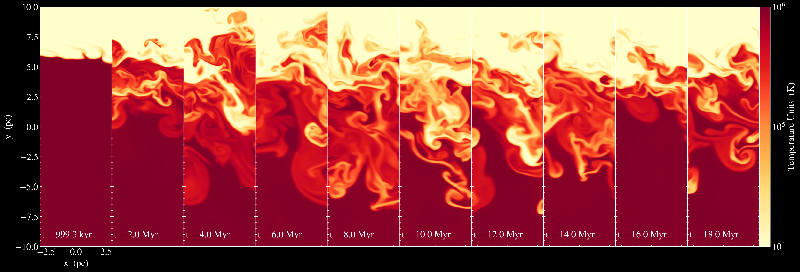
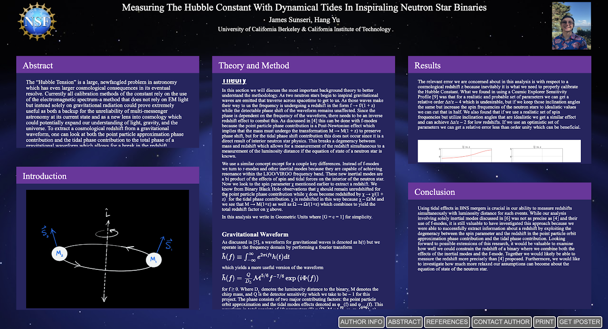

About Me
Education:
University of California Berkeley
Expected BA in Physics and Astrophysics; GPA: 3.950/4.0
Research Interests:
I am most interested in Computational Astrophysics. I am most passionate about
simulating magnetohydrodynamics, cosmology, and numerical relativity of compact
objects. I also have a strong interest in observation of supernovae, compact objects,
and other extreme astrophysical phenomena.
Publications:
James Sunseri's ADS Page
Personal Statement:
As the oldest of a big family, learning and helping others is what I love to do. My high school was
located in a small town called Lodi in California. I am currently a physics and astrophysics double major
at University of California Berkeley. Because learning new and interesting things is my passion, I love all
of science from the smallest quarks to the largest superclusters and everything in between. In addition to my
love of science, I’m an avid Ukulele and Guitar player, magician, and digital artist.
Because I aspire to have an educational role in academia and become an educator of physics and astrophysics,
I am currently on the graduate school track, and plan to get a PhD in the future. I want to be a role model and
an inspiration for the next generations of the world. Currently, I teach at the World of Wonders Science Museum
during my summer and winter breaks from college because I enjoy educating the public on really interesting scientific
topics and discoveries. This includes writing lesson plans, assisting with camps and events, and teaching with the
outreach program known as WOW on Wheels.
Research
In my time at UC Berkeley as a double major in Astrophysics and Physics, I have found that I am most passionate
about computational astrophysics. I love simulating the universe on a computer. There is something so
satisfying about seeing a beautiful simulation of a physical system in our universe. I am passionate about
simulating a wide range systems in astrophysics, anything from Magnetohydrodynamics of gasses in the
Interstellar Medium to large scale cosmological simulations of the universe like IllustrisTNG.
I romanticize the idea of being able to simulate the entire universe on a computer so much that I want to
pursue that dream for the rest of my academic career. As of yet, my research projects have consisted of the
following: Observational Cosmology under Prof. Filippenko, simulating mixing layers in the ISM with Athena++
under Michael Jennings, theoretical research on the plausibility of measuring the Hubble Constant using dynamical
tides in inspiraling neutron star binaries under guidance of Dr. Hang Yu, and a multi-scale morphological
analysis on the effects of baryonic matter on structure formation in cosmological simulations under guidance
of Dr. Jia Lu of UC Berkeley.
Click on a link to look at that project in more detail:
Mixing Layers ULAB Project
In my second year of undergrad I had the opportunity to be a part of the Undergraduate Laboratory at Berkeley
research program. In this program my group’s research was focused on computational astrophysics concerning mixing
layers in the interstellar medium. This has taught me a lot about how to use C++ as a tool for simulating
magnetohydrodynamical phenomenon. In this project we used the open source code Athena++ as a basis for creating
our own problem generator to model the interstellar medium. I was mentored by a fellow undergraduate student by
the name of Michael Jennings. In this project I discovered my love of computational astrophysics. In this project
I learned how to run MHD simulations using the library Athena++. Tasks involved writing problem generators in C++,
learning to use GitHub and UNIX, and some elementary lessons in astrophysical fluid dynamics.
Project description, including further links to posters, talks, publications.

LIGO Caltech Summer Undergraduate Research Fellowship
I had the privilege of being selected to be a participant in the LIGO SURF program in Summer 2020. In this program
I worked closely with Dr. Hang Yu to investigate measuring the Hubble Constant using dynamical tides in inspiraling
neutron star binaries.
Abstract:
The “Hubble Tension” is a large, newfangled problem in astronomy which has even larger cosmological consequences in
its eventual resolve. Currently all calibration methods of the constant rely on the use of the electromagnetic
spectrum-a method that does not rely on EM light but instead solely on gravitational radiation could prove extremely
useful as both a backup for the unreliability of multi-messenger astronomy at its current state and as a new lens
into cosmology which could potentially expand our understanding of light, gravity, and the universe. To extract a
cosmological redshift from a gravitational waveform, one can look at both the point particle approximation phase
contribution and the tidal phase contribution to the total phase of a gravitational waveform which allows for a break
in the redshift degeneracy found in the mass parameters, which we can exploit to extract a cosmological redshift and
thus the Hubble constant. Our analysis incorporates both f-modes and r-modes into the tidal phase contribution that
are found in binary neutron star inspirals. We use the Fisher Matrix Analysis to generate our relevant possible errors
on each parameter of the waveform.
Here is a presentation
I gave of my research in my research seminar course at UC Berkeley. In the audience is Professor
Mariska Kriek and my fellow peers. Below is the link to the iPoster I presented at the 237th American Astronomical
Society Meeting (click on the image to access the full interactive poster).

Observational Astronomy - Filippenko Research Group
As a member of the Filippenko Research Group at UC Berkeley I am responsible for monthly observing runs with the
Nickel 1m telescope at Lick Observatory. On these observing runs we do follow-up observations on recent
supernovae, transient objects, and globular clusters. I am also a member of the Zwicky Transient Facility
checking team which identifies potential supernovae to do follow up studies on. In this research group my
primary project has been to help develop a software package known as astroPIPS which is a Period Identification
and Pipeline Suite for detecting periods of variable objects such as RR Lyrae Variable Stars, Cepheid Variable
Stars, and potentially exoplanets. My role was to implement stellar parameter estimation models for RRab and RRc
type variable stars. With the multi-term Fourier fitting to a folded light curve we can estimate stellar
properties using empirically derived models. This software package is openly available now at
pypi.org/project/astroPIPS/.
Our project is currently observing variable stars in the M3 globular cluster to investigate Oosterhoff Types and better
understand the evolutionary path of variable stars. In this project I have begun making use of the 1D MHD stellar simulation
code MESA to simulate RR Lyrae light curves which we can compare to observed data which may allow us to investigate the effects
of metallicity in RR Lyraes further than ever before.
Recently the group has begun participating in the race for discovering Kilonovae (BNS and BHNS mergers). We are constantly on the
look out for new gravitational wave events from the LIGO & VIRGO gravitational wave observatories. One of our goals is to discover optical
counterparts for a binary neutron star mergers or a neutron star-black hole mergers. Finding these optical counterparts would allow the group
to recalibrate the Hubble constant and help address the Hubble tension in the scientific community. I am currently being trained to operate the
Shane Telescope (3-meter) at Lick as well. This training requires extensive knowledge of how to utilize the Kast Double Spectrograph instrument
for taking spectroscopic data of supernovae and other target objects.
In this research group, we often host workshops and journal clubs for new undergrads to learn from. Below is a presentation I gave for the group
as a crash course introduction to Python.
Contact
Email:
jamessunseri@berkeley.edu